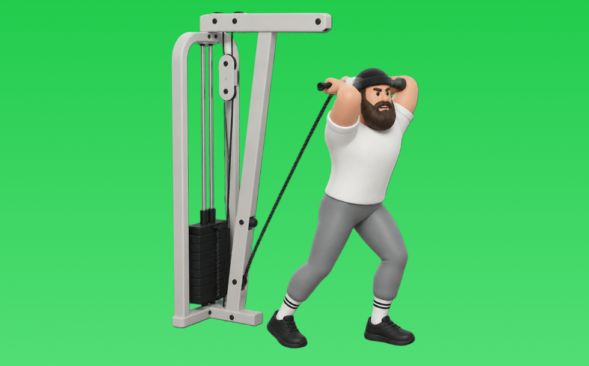

ケーブルトライセプスエクステンション

ケーブルトライセプスエクステンションとは、ケーブルを使って頭上で「肘を伸ばす」動作で腕（上腕三頭筋）を鍛える種目です。可動域全体で張力が抜けにくいのが特徴で、肘を固定し、前腕を伸ばしてゆっくり戻す動作を繰り返します。二の腕の厚みづくりやプレス系の補強が期待できます。
- 対象部位
- 腕
- 器具
- ケーブル
- 記録形式
- 重量・回数
- 別名
- オーバーヘッドトライセプスエクステンション / OHTE / ケーブルオーバーヘッドエクステンション / cable overhead triceps extension
YouTube動画
-
ケーブルで上腕三頭筋(長頭)を鍛える！『オーバーヘッドケーブルトライセプスエクステンション』の正しいやり方を解説します◎
-
【上腕三頭筋トレ】ケーブル(トライセプス)プレスダウンの正しいフォーム・やり方をご紹介 | 「腕を太くしたい人」必見！
-
これだけでOK！ケーブルだけで効かせる三頭筋トレ3選
-
三頭筋の筋肥大に最も良い種目は？【上腕三頭筋のティアリスト】
-
【ケーブルマシン】女性が知りたいお尻・二の腕・背中 使い方4選！
-
【よくある5つの間違い】三頭筋強化種目 ケーブルトライセプスエクステンション篇
-
腕を太くしたいなら必ずこの種目やれ！意外過ぎた最強種目
-
【腕トレ】三頭筋に強烈なストレッチがかかる種目！【ケーブルオーバーヘッドトライセプスエクステンション】
-
【二の腕トレーニング】二の腕を鍛えられる"ケーブルプッシュダウン"やり方《心斎橋の女性のためのパーソナルジム・ボディーサーベーション》
-
【初心者】ケーブル・プッシュダウンの効果的なやり方 | バリエーション別の解説【ビーレジェンド プロテイン】
-
【初心者必見】ケーブルマシンを使って太い腕を作る！トライセプスプレスダウン
-
『ケーブルトライセプスエクステンション(ワンアーム)』の正しいフォーム・やり方をご紹介！
-
【ダンベルのみ上腕三頭筋3選】腕の太さを出す種目はコレだ！
-
【筋トレ】肘が痛みにくいライイングエクステンションのやり方！【上腕三頭筋】
-
ケーブルを使って上腕三頭筋を鍛えるトライセプスエクステンションの方法／筋トレ実践講座
YouTubeショート
-
みなさんはオーバーヘッドエクステンションやってますか？持田選手がしっかり効くトレーニングをレクチャーしてくれました！#volix #腕トレ #ちょこっとおしい #上腕三頭筋 #volixgear
-
正しいトライセップス・プッシュダウンのやり方 | ボディビル日本チャンピオンが解説 #shorts 【ビーレジェンド プロテイン】
-
ケーブルエクステションの正しい位置
-
みなさんはオーバーヘッドエクステンションどのようにされてますか？？今回は持田選手がオーバーヘッドエクステンションを伝授！次はどの種目の解説をやってほしいかコメントしてね！#ちょこっと惜しい
-
【両店共通】ケーブルプレスダウン 使い方動画
-
今さら聞けないケーブルプッシュダウンのやり方説明してるで‼️#トレーニング #パーソナルトレーニング #フィットネス #筋トレ #プロテイン #ワークアウト #腕トレ #三頭筋
-
【よくある間違いケーブルプレスダウン】 #ダイエット #筋トレ #新座市 #志木市 #ケーブルプレスダウン
-
上腕三頭筋を最大限鍛える方法【筋トレ】
-
【三頭トレ】ケーブルオーバーヘッド・トライセプスエクステンション(EZ) #筋トレ解説 #三頭筋 #腕トレ
-
正しいライイングトライセプスエクステンションのやり方 #フィットネス #筋トレ
-
三頭トレ おすすめ 種目【第1位】オーバーヘッドエクステンション #shorts #筋トレ #腕トレ #三頭筋
-
ケーブルオーバーヘッドエクステンションで三頭筋をデカくしよう💪
-
みなさんはライイングエクステンションどのようにされてますか？？今回は持田選手がライイングエクステンションを伝授！次はどの種目の解説をやってほしいかコメントしてね！ #volix #ちょこっと惜しい
-
【上腕三頭筋トレ】ケーブルプレスダウンのやり方解説 #筋トレ #トレーニング #腕トレ
-
こんなライイングエクステンションはやめろ！正しいフォーム解説 #筋トレ
-
【三頭筋】ケーブルプレスダウンで気を付ける4つのポイント #Shorts #腕トレ
-
本当に正しいライイングエクステンションのやり方
-
【Training】2種類のケーブルオーバーヘッドトライセプスエクステンション#shorts#triceps#上腕三頭筋
-
かっこいい腕を作る腕トレ3選#shorts #youtubeshorts #筋トレ #腕トレ #ジム #トレーニング #筋トレ大学 #筋肉博士
-
ケーブルトライセプスエクステンション二の腕を鍛える！
-
キックバックのやり方#初心者 #ジム #ダンベル
-
正しいフレンチプレスのやり方 | ボディビル日本チャンピオンが解説 #shorts 【ビーレジェンド プロテイン】
-
それ二の腕痩せ出来ません！正しい二の腕を細くする方法をマスターしましょう！#ダイエット
-
先生! 腕が太くなるおすすめの種目は？ ＃Shorts #助けて山本先生 ＃筋トレ大学
-
正しいライイングエクステンションのやり方
-
三頭筋をデカくする必須種目【フレンチプレス】
-
【1分で分かるマシンの使い方】ケーブルプレスダウン編 #Shorts
-
このアームカールはやめろ！#shorts
-
ダンベルトライセプスエクステンション（Dumbbell Triceps Extension）のやり方と基本フォーム
-
ケーブルトライセプスエクステンション（Cable Triceps Extension）のやり方とフォーム
-
#ケーブルストレートキックバック#ケーブルトレーニング#臀筋トレ
-
個人的に最も効果のある三角筋の種目3選を紹介 #筋トレ #フィットネス
動作方法
- 肘を固定し、肩の力みを減らす
- 狙う部位で押し切る
- 可動域を保って戻す
動作ポイント
- 肘を開きすぎない
- 肩をすくめない
ワンポイントアドバイス
- 肘の位置を固定すると狙った部位に効きやすい
- 回数を急がず、下ろし動作を丁寧に行う
目的別回数設定
目的や体力に応じた一般的な目安です。無理のない範囲で調整してください。
- 筋力アップ
- 1〜5回
- 筋肥大
- 6〜12回
- 持久力アップ
- 13〜20回
YouTube動画について
動画はYouTubeの公開情報をもとに表示しています。内容は投稿者によるもので、Biggrによる監修ではありません。
アプリを入手
筋トレやトレーニングの記録はBiggrにお任せください。今すぐ無料で使い始められます。